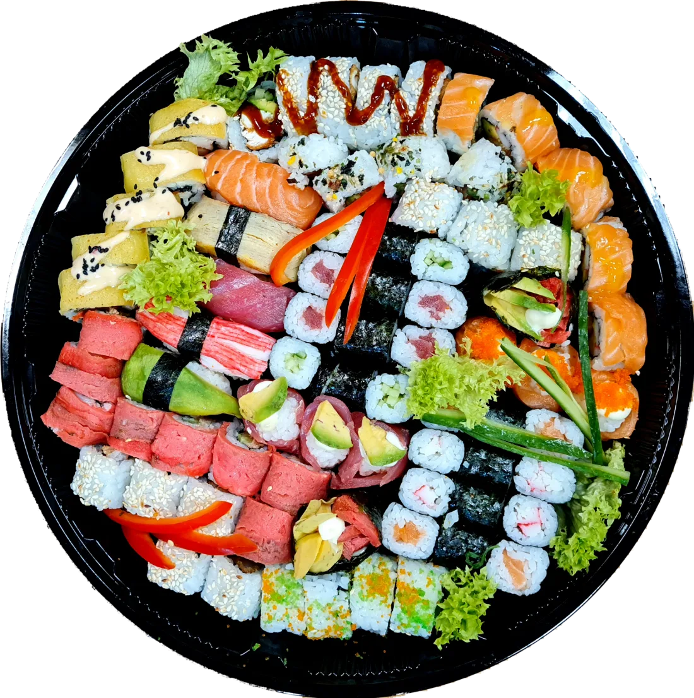
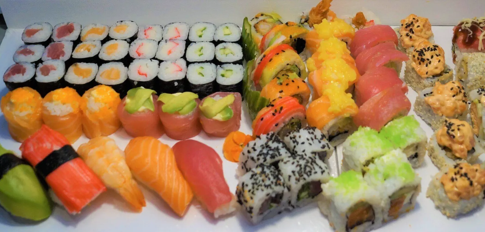
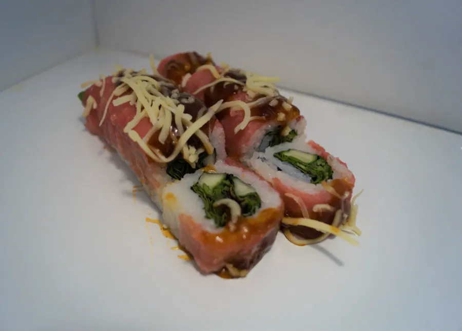
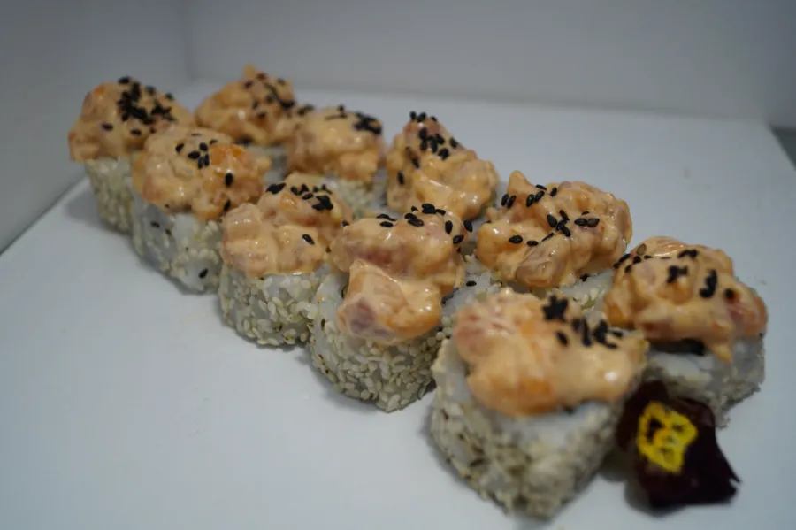
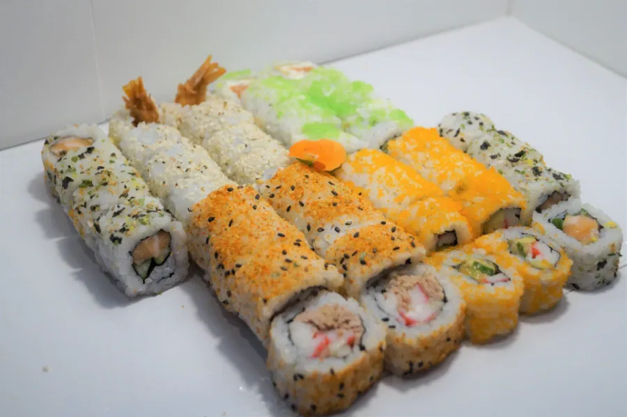
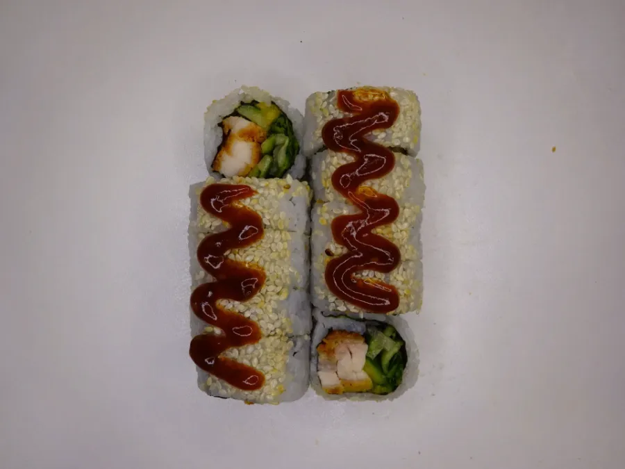

Executive Chef Sushi
The best quality gives the finest in taste
Verse sushi, fusion rolls en poké bowls uit het centrum van Dieren. Al onze gerechten zijn halal.
Vandaag wo t/m vr 16:00 tot 20:00, za en zo 15:00 tot 20:00

Dit is een website, geen webshop. Bestellen doet u door ons te bellen op 0313 84 66 78 of via onze bestelpagina.

Wie we zijn
Wij zijn ervaren chefs die gespecialiseerd zijn in sushi. We zitten in het centrum van Dieren en staan bekend om onze kwaliteit. In de keuken gebruiken we alleen de verste en beste producten, en dat proeft u in ons brede assortiment.
Kwaliteit
De kwaliteit van onze gerechten heeft in de keuken de hoogste prioriteit. We werken alleen met de beste ingrediënten, vers geleverd door onze vaste leveranciers.




Openingstijden
| Maandag | Gesloten |
|---|---|
| Dinsdag | Gesloten |
| Woensdag | 16:00 – 20:00 |
| Donderdag | 16:00 – 20:00 |
| Vrijdag | 16:00 – 20:00 |
| Zaterdag | 15:00 – 20:00 |
| Zondag | 15:00 – 20:00 |